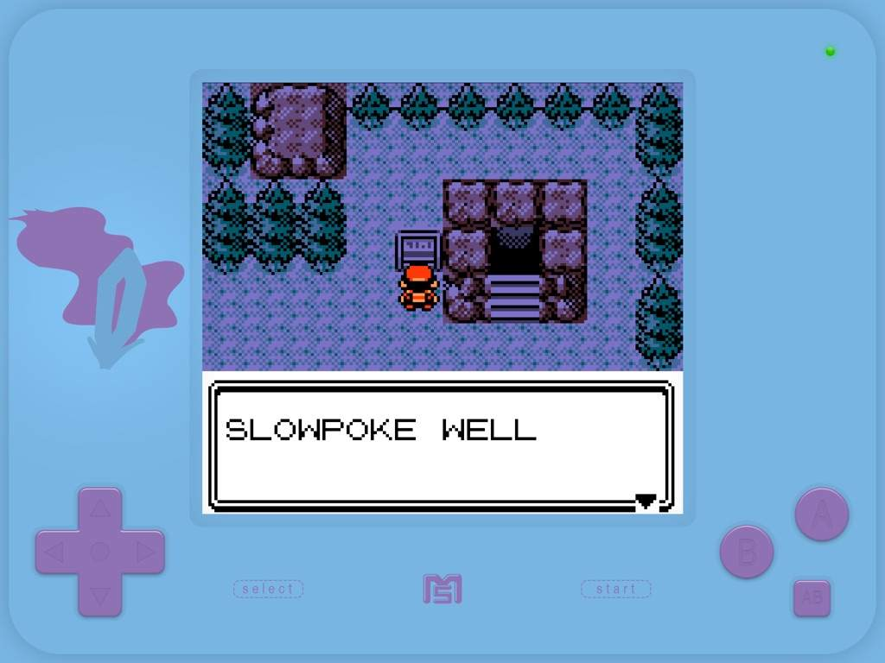

De Slowpoke Well is een put in Azalea Town (HeartGold/SoulSilver)
Deze put is gemaakt door de inwoners van dit dorp
De reden ervoor is dat
Bij de Slowpoke Well is je allereerste battle met Team Rocket
Ze willen de staarten van alle Slowpokes in de put stelen
